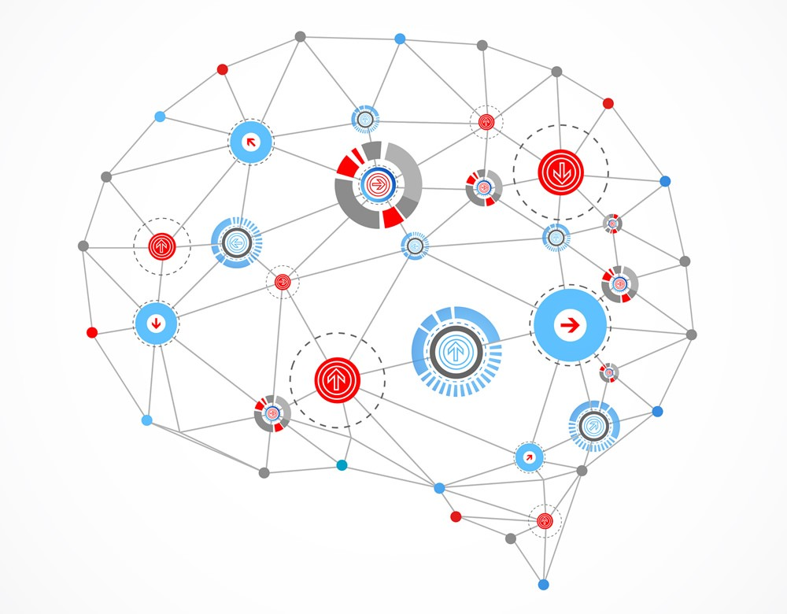
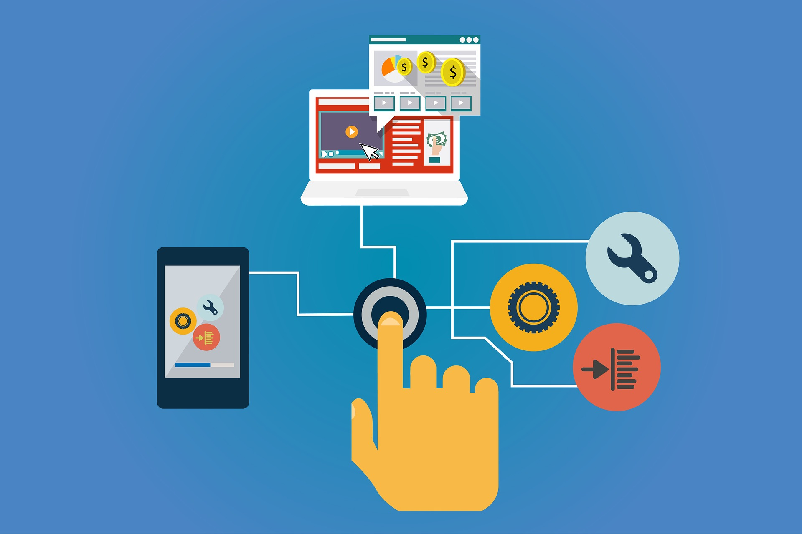
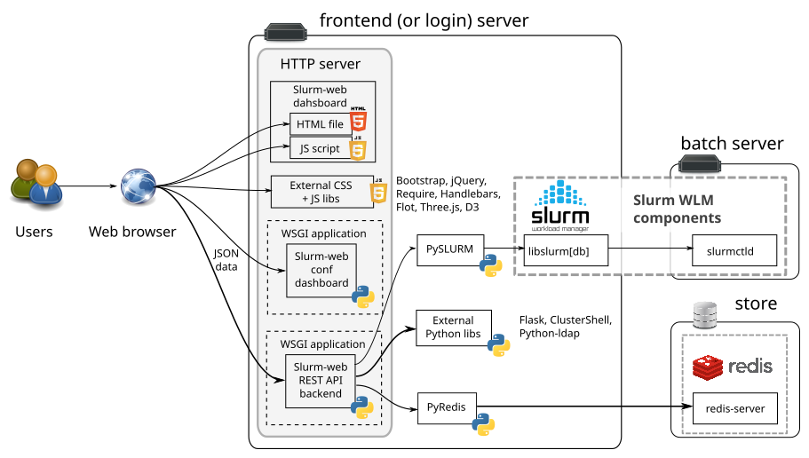
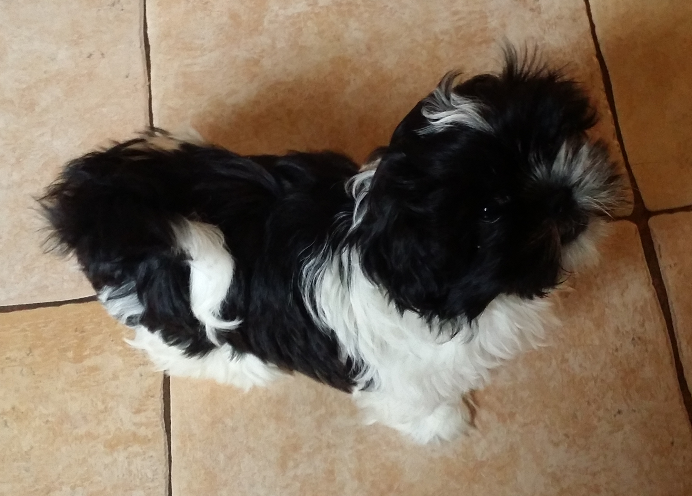

Hi there!
My name is Kacper and I welcome you to this little homepage of mine. I am a computer science student from Warsaw University of Technology.
Currently I am finishing my bachelor thesis and I also try to stay busy by working on various projects or learning new skills. Because I am fascinated by various topics I try to learn a little of everything, in hope to broaden my perspective on currently used technologies and such. Thanks to that I have found and learnt many interesting and useful things that help me be a better programmer. When I am not working or studying anything I love to relax by training powerlifting, playing various sports such as tennis or basketball, rollerskate and many others. I am also avid video games player and love to meet with my friends and try different new things. Because I am fascinated by various topics I try to learn a little of everything, in hope to broaden my perspective on currently used technologies and such. Thanks to that I have found and learnt many interesting and useful things that help me be a better programmer.
My interests
Here are some of the things that I find particulary interesting.

Machine Learning
It was the first thing that I have found really fascinating. Since then I have gone through famous Andrew Ng's Machine Learning course, excellent Stanford's course about visual recognition, and took various courses about many different ML topics at my university. I am especially interested in deep learning and I hope that at some point I will be able to work on some fun projects such as creating software for autonomous vehicles.
Some of the projects that I have made to further my knowledge are:
- Optonet - As a project for heuristic algorithms course, I have created a program that can solve data demands in american and polish optical networks. It can find a solution to given data demands much faster than for example cplex alorithm. I believe that after fine tuning it further, it could be capable of finding near-optimal solution in very short time.
- Student Alcohol Consuption Regression - Using the data from the student alcohol consumption survey available at Kaggle I have done regression of workday and weekend alcohol consumption. Everything was done using R and allowed me to learn me many things involved in statistical analysis of the data, such as how to handle skewed dataset, how to check covariance and many others.
- TetrisENN - As a part of a three people team I have implemented NEAT algorithm (Evolution of Neural Network) and tried to use it to make a program capable of playing tetris on its own. The result was not perfect - the bot takes a long time to make just a tiny bit of progress, but despite that it was very fun and educational project.

Web development
It is a topic that I am learning currently. I have become interested in creating web applications after one of the courses at my university. It convinced me that the ability to create software capable of using various web technologies is very important and that not knowing at least basics would be a big mistake. Thanks to that I was able to see yet another fun side of software development and also decided to steer my nearest career towards it. Right now I would love to further my knowledge in back-end development and making fast and reliable server-side solutions. Some of my projects related to that topic:
- Botnet P2P - As a part of a team during one of my courses, I have created in Python a p2p client. Thanks to asyncio it works completly asynchronously, which makes it capable of handling many connections at the same time. Originally it was supposed to be capable of being bot network's node (meaning that it was supposed to annonymously infect other test machines, etc.), but because of a deadline, we were forced to leave it as a simple p2p node capable of transfering files and sending commands to other machines.
- Rufus - A simple time management application. I have begun working on it in order to learn Django and because to make using my various time management techniques faster and convenient. I hope to finish this project soon and let me as well as others use it to make better use of time spend on various projects and other tasks.
- This site :) - The simplest and in some way the most fun part of web development is after all website creation. This homepage allows me to actually use all the new things that I am learning and in the future I plan to use it as a sort of a blog and share with others all the things that I find interesting.

Software Architecture
After working on many group assignments and after creating many programs by myself, I have started to appreciate just how much a well thought-out project structure can help in the development. Well designed structure and workflow combined with good programming practises and usefull tests, can often speed up making of the program and even more importantly make debugging, maintaining and upgrading it much easier, faster and cheaper. Because of that belief with each new project, I have been working on making my code cleaner and my program architecture simplier. Also I try to try many different languages and technologies, because every one of them has some unique and interesting way of tackling different problems and I believe that I can learn to be a better programmer by studying them extensively.
Also:
Game development, Virtual Reality, Functional Programming, Tennis, Powerlifting, Fantasy and many
others!
Also, here is my new doggo: Lucy
